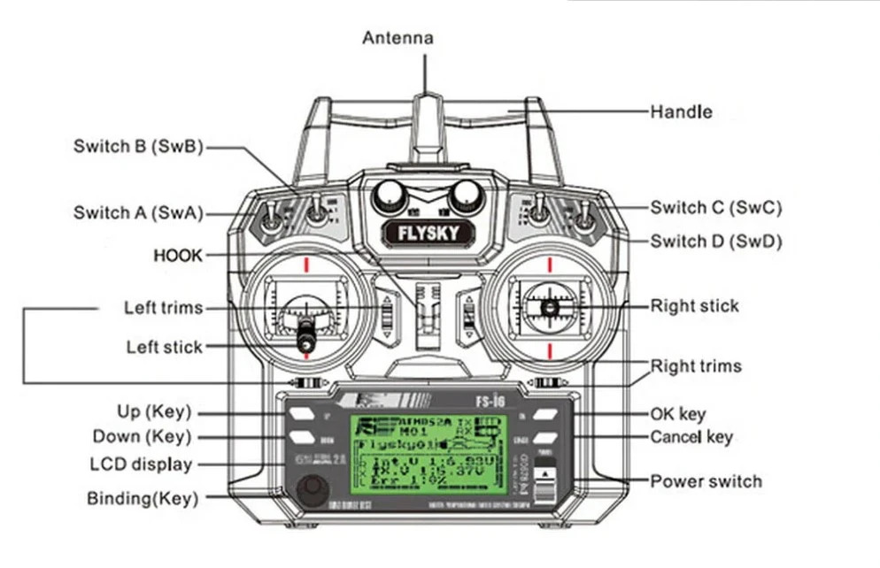

What is a Transmitter?
The transmitter is the handheld controller used by the pilot to send commands to the drone.
Key Features
- Controls throttle, pitch, roll, and yaw
- Multiple channels for extra functions
- Long-range radio communication
Typical Use Cases
- Manual flight
- FPV racing
- Hybrid autonomous drones